What are we?
A strictly digital creative production house.
Why we exist?
We exist to beautify.
Beauty appreciates context, culture, complexity and craft.
We believe digital work has become increasingly simplified and predictable.
We exist to bring back the beauty, the meaning and the craft.
Vision is more than what you see.
Crafting what we perceive: the image, film or design that gives the audience something to experience and feel.
The perspective that determines what something means, why it matters, and what position we take.
How we express that perspective through story, giving people something they can follow, understand, feel and resonate with.
What have we crafted?
Every project is an opportunity to up the ante.
Who crafts it?
Expectation subverters.
Find us
Thank you
You’ve found us!
We’ll be in touch soon.
Brands we have worked with







We evoke emotions.
Or provoke them.
Fully in-house.